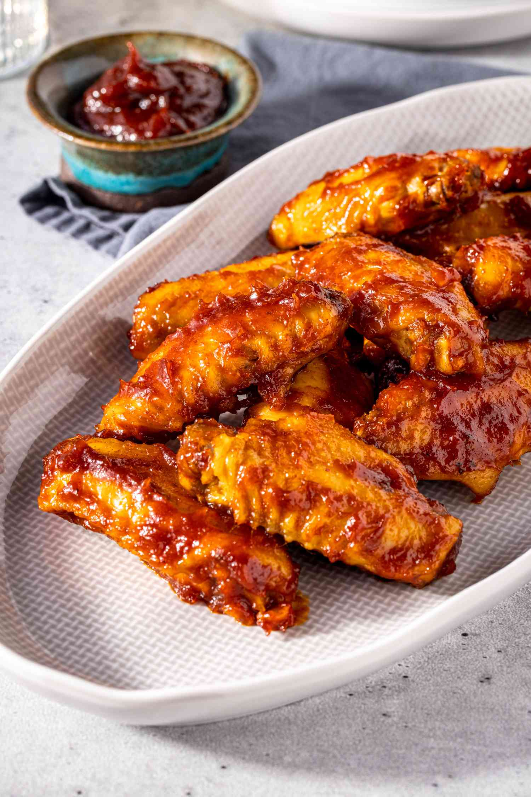

Chicken Wings
Home

Description
Chicken Wings are tasty foods that can be crispy, delicious
, flavorful, and most important of all, easy to make.
Ingredients
- Oil: Locks the moisture and makes the seasoning stick
- Seasoning: For the extra taste on the Wings
- Wings: Need 10 Wings for this recipe
Steps
- Combine oil and seasoning together and blend together
- Add the wings to the mix and make sure it is well coated
- Arrange on a baking sheet and bake until crispy